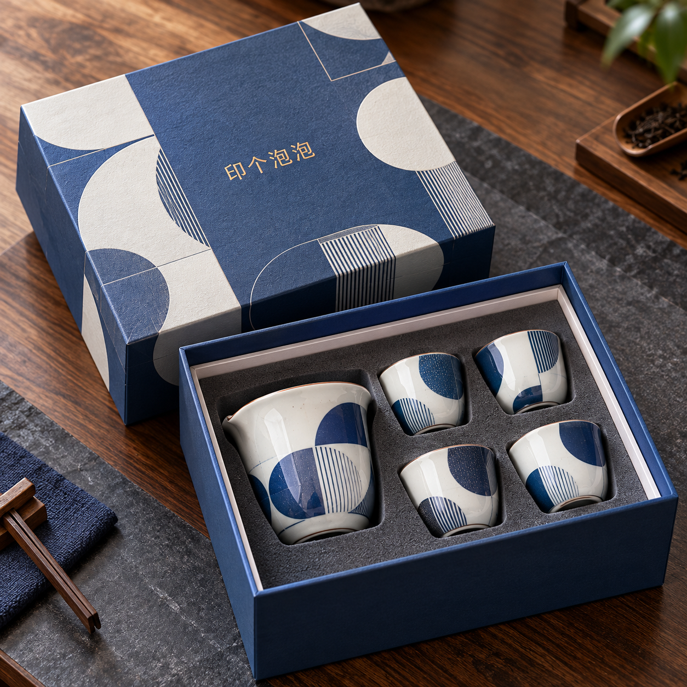

公司新闻
天地盖礼盒：上盖与底盒怎样配套确认
2026-10-16 · 印个泡泡
上盖、底盒和装入物要作为一套确认，设计场景只能帮助理解外观。
本文为平台盒型使用说明，不是新品发布或客户案例。进入包装选型页面查看天地盖类结构时，建议把上盖、底盒和实际装入物放在同一份需求中确认。

图：平台维护方提供的设计场景素材，仅供外观参考，不是客户订单、实拍出货或性能测试证据。图中的内衬、杯具和表面效果不代表任何选项默认包含这些配置。
看懂图片后，再问配套关系
上盖与底盒可以分别展示，却需要一起验证。只确认“上盖能盖上”还不够：希望盖到什么位置、打开时怎样抓握、盒内物品是否高过底盒，都影响使用感受。图片无法给出配合松紧，也不能证明运输时不会自行开盖。
与制作方沟通时，把预期动作说清楚，比仅说“做得紧一点”更有帮助。例如：“装入实际产品后，可以用双手正常取下上盖；取盖过程不希望带起整套产品。”这是一项待确认的使用要求，不是通用验收标准。
一套文件保留哪些信息
| 确认对象 | 需要说清的内容 | 不能从效果图直接认定的事 |
|---|---|---|
| 上盖 | 覆盖位置、图案朝向、抓握方式 | 配合间隙与开合力度 |
| 底盒 | 实际可用空间、产品摆向 | 装入后一定合盖顺畅 |
| 内部配置 | 是否需要内衬、由谁提供 | 图片里的配置全部包含在报价内 |
| 整套包装 | 装盒动作、外部运输方式 | 礼盒本身已经满足运输保护要求 |
准备样品时，尽量使用实际产品或能代表外形、重量的替代物，并明确替代物与实物的差别。分别记录空盒和装物后的开合情况；同一上盖不要与不同版本底盒混用后再下结论。
如果页面上的配置还不能完整表达配套关系，保留所选盒型页面并附上文字说明。最终以制作方确认的结构、样品及订单约定为准，不把展示图当成尺寸或工艺承诺。
为你的产品，找到适合的包装。
选包装，获取报价 →